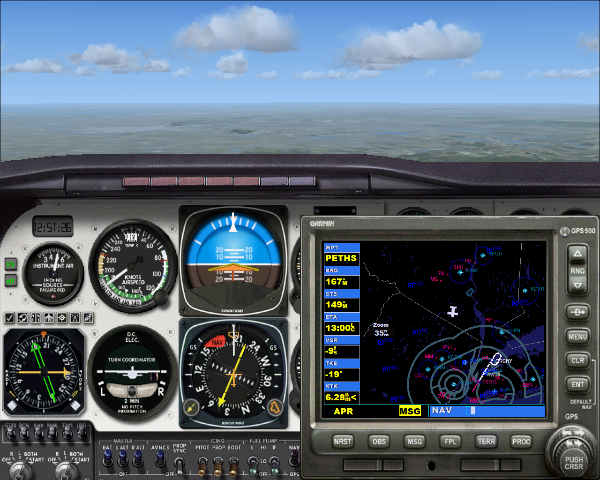
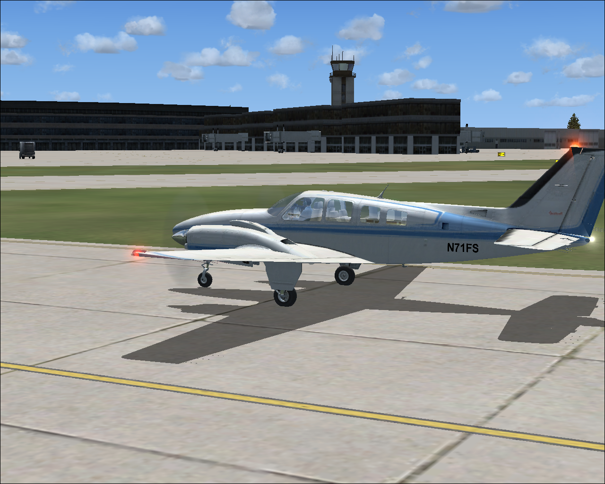

Beginner's ILS Tutorial
by Don Filer
Posted on January 1, 2019 at 12:00 PM
Recipe for success with Flight Simulator
Using Microsoft Flight Simulator can be a frustrating experience to say the least. I’ve scouted around for years and found lots of help but never what I thought a novice would need to have an enjoyable experience without several years of trial and error. Hence, the reason for this tutorial. I hope you too will be able to get off the ground with minimum difficulty and have an enjoyable flight simulator experience.
The first step will be to select Free Flight where you may choose the plane to fly in. I selected the Beechcraft Barron since I know it’s available in FS 2004 as well as FS X.
Fire up your Flight Simulator. It shouldn’t matter which version you use, the sequence will be the same. You won’t have to remember lots of codes but it might be handy to have a pen and paper available. The basic things you will need to remember are: the altitude you will be flying at, which airplane you will fly, where you will start, and the airport you wish to land at. That sounds simple enough. There are lots of other options and I’ll mention them as we go along.
The first step will be to select Free Flight where you may choose the plane to fly in. I selected the Beechcraft Barron since I know it’s available in FS 2004 as well as FS X. Next, drop down and select Flight Planner. This will let you choose your take off and landing airports and the ILS (instrument) internal settings for the simulator. It’s a good idea to choose two airports within 50 miles of each other so the flight doesn’t get too long. I’m going to start my flight at Stewart International Airport (KSWF) in Newburgh, NY and land at La Guardia (KLGA) in New York City. You may select airports by their airport abbreviations, the cities they are in, or by the name of the airport.
Then I want to be sure to click on IFR so we can use the ILS features of Flight Simulator. When you click on Find Route, a map will appear showing the terrain and importantly the cruising altitude. You may change this if you want. I’m going to use the value already there which is 5,000 feet. When you click OK, you can save the flight plan and the program will ask if you would like it to move the aircraft to the departure airfield. Click yes. It is worth noting that you can go through this flight plan exercise while in the air and you would not necessarily want to move to the departure airport.
There are more options you can try later, like choosing the time of day, season, or some other weather. For now we’ll just go ahead and click on Fly Now! Since our flight plan is saved we can just load it the next time we want to fly this route.
You should now be looking at the cockpit panel of your Barron 58. If your screen doesn’t look like this you may have to toggle the view you have. You can do this by depressing the F10 key. If that doesn’t work and your view is outside the aircraft, you will have to toggle the view until you are back inside by pressing the (lowercase S) key.
The instrument panel may be daunting at first. Don’t worry, just like in Dad’s car, you’ll get used to it. We need to set the airplane up for takeoff. I like to begin with the cruising altitude. In this model, we access that using the radio panel which is designated by the radio tower in the horizontal icons on the left side of the panel about half way down.
The left most icon is a check mark. The one next to it has a set of earphones. Next to it are the compass, throttle, map, radio, and radar icons. Click on the radio tower icon and the radio panel will appear on the right side overlaying the panel. See the photo below.
By clicking on the altitude we will increase it from 0000 to 5000 and click on the alt button below it setting the autopilot to this height. The rate of climb should automatically read 700 feet per minute. If it doesn’t increase it the same way you increased the altitude.
Now depress (Control h). This will set your heading into the autopilot to be the same as the runway you are on, which looks to be runway 9, due east. The lower center dial shows which direction we’re headed in. Depress (lowercase B) key to calibrate the altimiter with our barametric pressure and hit the F7 key to lower the flaps for takeoff.
Now we can check in with the tower to get permission to take off. You can save a little time by skipping this step now and calling the tower just after takeoff. For formality sake we will get permission before leaving.
The Tilde ~ key provides the same function as clicking on the earphones icon. I prefer it because I like to clear the radio transmissions from the screen frequently. We will also respond to tower and ground control communication by depressing the numeral 1 key. We can also clear the screen of the radio stack by clicking on the radio tower icon again.
You can see the chatter between the tower, ground and ourselves in the upper left hand dialog box. I like to drag it there from the center where it will pop up automatically when we click on the earphones icon. It should be obvious when you should depress numeral 1 or numeral 2 to request takeoff permission. On the screen below I have to select numeral 3 and my final clearance will be granted.
OK, a couple of things to note for taking off. If you are not using a joy stick, you will get maximum power by depressing Function key F4. F1 kills the throttle. F2 decreases it gradually and F3 increases it gradually.
The Up, Down, Left, and Right arrows will pull the yoke back, forward or turn it left and right. You should make sure your speakers are on and if you get into trouble, you can save your sanity by pressing (lowercase P) the Pause key. I think we’re done with final preparations. Request takeoff clearance by pressing numeral key 3. Follow up with your acknowledgement, and press Function key F4 or apply full throttle making sure the parking brake is released.
When you have reached 90 knots on the second dial in the upper left quadrant of the panel, you can ease the yoke back and gently lift off the ground. I usually allow several seconds before retracting the landing gear (lowercase G) Key and bringing the flaps to their original position by pressing Function key F5. If you like, you may toggle the view by pressing (lowercase S) and you will see a view from the spot plane outside. Remember you can pause the flight at anytime by pressing P.
To swing the spot plane view around you can use your joystick hat switch or hold down the space bar and use the arrow keys. Toggling the view by pressing (lowercase S) will result in views from the tower. If you have paused your flight, depress (lowercase P) again and then press (lowercase Z) enabling the autopilot. We’re going to use the autopilot for the rest of our flight taking much of the manual error out of the equation.
So now we should be climbing at the prescribed rate and flying straight with the runway heading. The only other thing we need to be aware of right now is the throttle. In some of the other aircraft, especially the jets, you can set this also before taking off. The only difference is we don’t engage it until after takeoff and enabling the autopilot.
The magic number for the speed setting is 200 knots for most aircraft. The exception will be larger jets like the 747 which will need a speed setting of 300 knots or greater. Flight rules say we must stay below 200 knots until we get above 10,000 feet. Then we can increase the speed to 250 or higher.

We ease back on the throttle (F2) and about this time we will get a radio message from air traffic control to change our communication settings. Don’t be alarmed. All we need to do is pay attention to the radio dialog box and respond by pressing (numeral 1). The first depression will be to acknowledge the ATC transmission, the second will change our radio frequency automatically, and the third will contact the new frequency. In this case we are told to make a right turn and climb to an altitude of 5,000 feet. We depress (numeral 1) to acknowledge the instruction and proceed to make the turn.
On the lower center dial which displays our heading, there are two small knobs on the lower left and right. By clicking on the right side of the lower right hand knob we will move our heading selector to the new heading of 180. The ATC comes over the radio and asks us to turn right to a new heading of 210. We acknowledge (numeral 1) and increase the heading selector.
We are making a right turn over the town of Newburgh and following the path down the Hudson River. We get one more course correction to heading 230 and this time the controller tells us we will be landing on runway 4 at La Guardia. This is a key piece of information and one we will need to set up our ILS approach. After acknowledging the ATC and making our course adjustment, we should make sure our speed is alright. My Barron 58 is doing about 140 knots and I’m passing through 3,000 feet on my way to 5,000. Now we’re going to open up the map by selecting the map icon, clicking on the La Guardia Airport and determining the final settings to land at runway 4.
You can see from the bottom part of the chart that we will need to set the Course Selector knob (the small one on the lower left of the center dial – across from the heading selector knob to 045 and our Nav 1 radio frequency to 110.500. The beauty of this system is it will line us up with the correct runway at La Guardia and allow us to fly right down to the runway using the autopilot.
You can see in the screen shot below I have set the Course selector to 045 and the arrow is pointing straight down. I have opened the Radio stack and changed the Nav 1 radio setting to 110.50. I also need to increase the throttle since my airspeed is getting a little low.
After we reach 5,000 feet New York Approach will ask us to make a small course correction to heading 205. Just follow the instructions and depress (numeral 1) to respond. This is a good time to toggle the views by depressing (lowercase S). You may also press Function Key F9 to view the cockpit in a mode that allows you to turn your head left right and up and down. To return to this view inside the plane, press Function Key F10.
The larger upper left dial is our speed indicator. The larger upper right dial is our altitude indicator displaying 3,200 feet. The larger lower right dial is our vertical speed or rate of climb. The radio stack is in sections the top section is COMM (communication) 1 and NAV (navigation) 1. The second section is COMM 2 and NAV 2. The next three sections won’t apply in this tutorial but the bottom is our autopilot.
While we have a little time to kill, let’s set our GPS device for our final descent and landing at La Guardia. Click on the radar Icon (furthest icon to the right) and the Garmin GPS will overlay the flight panel. Click on the PROC (procedure) button on the lower right to get to the screen above. Click on the ENT (enter) button (lowest one on the far right) and a list of runways will appear.
The one we want is at the top of the list so click on ENT (enter) again. Then ENT to Load vectors and ENT again. At the next screen we want to Activate vecors. The GPS will now be loaded with our landing runway. To see that it is, click on the outer knob with the two way arrows. This opens a different view of our route and then click on the very top button to zoom out until you can see the airport with the red line indicating our final path.
This will come in handy as we get closer to our final approach.

As we get closer, you will want to make sure you switch views to the spot plane outside and catch a glimpse of the New York skyline and Newark airport. If you’re lucky you will even see the Statue of Liberty on final.
We will get a couple of course changes and a request to drop down to 2,700 feet. Acknowledge the commands by pressing (numeral 1), changing the heading setting and opening the radio stack to reduce the altitude to 2,700. Watch your speed that you don’t get going too fast as we descend.
Making our final turn to 075 and going to 2,700 feet at 1,000 feet per minute. We get our final approval to land on runway 4. Now the fun begins!
I have opened the GPS display and we can see our runway. The important instrument to watch now is the lower center dial that indicates the heading. It now shows us the course to our runway and the correct rate of descent. When the yellow line to the right moves left, we want to turn our aircraft so the yellow line, lines up with the arrow. We know this heading will be 045 degrees. The GPS indicator which is set for 10 miles in this screen shot gives us ample time to know when the yellow line on our heading indicator will move. You may switch views to see the sights. Just be sure as you close in on the red line, you are paying close attention to the heading indicator.
There’s the statue of Liberty and Manhattan Island. We can’t see the airport yet and we are already lined up with the runway. After turning to the 045 heading, I opened the radio stack and clicked on the APR approach button which will keep us on course and fly down the glide path to the runway. I also added flaps by pressing Function Key F7.
I’ve added full flaps. The heading indicator shows I’m lined up with the ILS and the lighted tabs on the autopilot shows it’s on and the approach tab is engaged. My speed is OK and I can just see the airport now. I will get final landing clearance in a moment and will lower the landing gear (lowercase G). We should keep the speed above 120 knots and the autopilot engaged until we get to about 300 feet. I will kill the throttle at 100 feet and touch down under my own control.
Disengaged the autopilot at 300 feet (lowercase Z) and pushed the throttle all the way in at 100 feet (Function Key F1). Ease the yoke back just a bit to flare before touching the ground.

That’s it. A perfect ILS approach and landing on runway 4 at La Guardia. Congratulations, you made it. Depress (Control C) and you are done.
Disclaimer: I am not now nor have I ever been a pilot. I did try my hand at flying a plane once. I know nothing about flying beyond what I have read or learned from flight simulator. FS 2004 and FS X are simulators at best and considered games by some. I have been a user and fan of Flight Simulator for more than 20 years and have seen the product grow with each advancement in computer technology and affordability. The procedures described here are formulated from my experience using Flight Simulator and in no way should be taken as the way to fly an actual airplane.